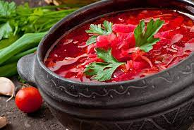
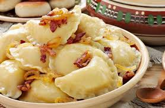
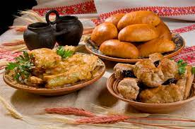

Українська кухня – це справжнє диво, що відображає багатство традицій та культурних особливостей нашої країни. Її історія нараховує вікові традиції, які передаються з покоління в покоління, зберігаючи свій неповторний смак та аромат. Вивчення української кухні дозволяє кожному почути багатогранність культурного спадку та відчути особливу атмосферу гостинності.
Про українську кухню
Найпопулярніші страви
Борщ – це не просто страва, це символ української кухні, яка зігріває своїм ароматом і смаком. Вареники з домашнім начинням завжди викликають почуття затишку та домашнього тепла. Голубці, запашні та соковиті, вважаються одними з найулюбленіших страв українців, які є втіленням домашньої кухні та сімейного обіду.
Окрім борщу, в українській кухні важливе місце займають різноманітні супи, такі як щі, солянка, грибний та курячий супи. Їх смак розкривається завдяки довгому варінню на вогні, дозволяючи інгредієнтам дарувати багатий букет смаків.



Рецепти та приготування
Рецепти українських страв дуже різноманітні, але завжди спираються на натуральні продукти та традиційні приправи. Готувати українські страви - це не просто приготування їжі, це цілий процес, повний любові, тепла та турботи. Секрет смачного борщу або галушок часто передається з родини в родину, створюючи особливу зв'язаність із кулінарними традиціями.
Українські свята і традиції
Українські свята неможливо уявити без смачних та обрядових страв, які зберігаються від століть. Різдвяна вечеря з 12 стравами або великодня паска – це не лише їжа, але і частина культурної спадщини. Гостинність та обіди за довгим столом – це традиційні риси українських свят, які зберігають дух спільноти та турботи.
Ось основні українські свята та традиційні страви, які на них готуються:
- Різдво
- Кутя: пшенична каша з медом та маком, символізує благополуччя та довголіття.
- Кутянка: солодкий пиріг з маком та медом.
- Великдень
- Паска: смачний солодкий хлібець із сиром та сухофруктами, символізує воскресіння Христа.
- Пасхальні яйця: фарбовані яйця, які символізують нове життя та відродження.
- Бабка: пасхальний кулич або пиріг із сухофруктами та горішками.
- Масляна
- Млинці: тонкі блинчики, які символізують сонце та прийдешню весну.
- Вареники з маком: традиційний десерт у Масляні, який символізує здоров'я та багатство.
- Запіканка: сирний пиріг з творогу та яєць, який є символом процвітання та родючості.
- Трійця
- Кутя: традиційна страва, яку готують із ячменю, меду та горіхів.
- Свинина на шпаківні: запечена свинина, яка символізує здоров'я та достаток.
- Медовий торт: солодкий десерт, який є символом солодкого життя та веселощів.
Кулінарні майстер-класи
Наші кулінарні майстер-класи – це чудова нагода не лише навчитися готувати смачні страви, але й ділитися досвідом з іншими прихильниками української кухні. Шеф-кухарі та професіонали готування покажуть вам та вашій родині, як приготувати справжні українські шедеври. Приєднуйтеся до наших майстер-класів та відкривайте для себе нові аромати та традиції української кухні!